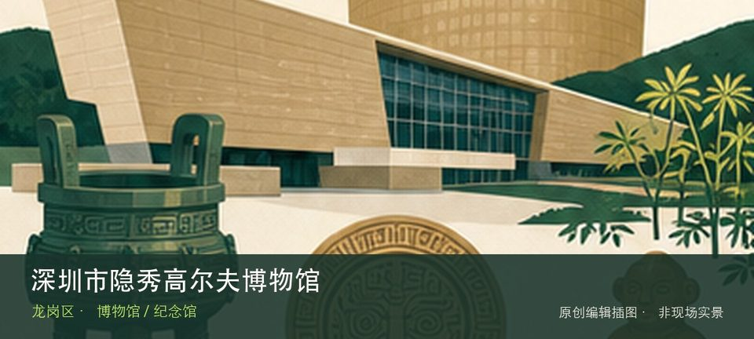

适合谁
适合对该专题有明确兴趣的人，也适合作为高温和雨天行程；开放不明时不宜临时前往。

SHENZHEN GUIDE · 194
宝龙 · 博物馆 / 纪念馆
深圳市隐秀高尔夫博物馆位于宝龙，球具演变、运动规则和俱乐部文化构成小众体育专题，场馆位于特定运营空间，社会参观条件需确认。把注意力放在历史高尔夫球具和运动规则演变，能避免只凭名称或网红照片判断这里。理解这处场馆，重点不是把所有展柜看完，而是沿着历史高尔夫球具和运动规则演变两条线索辨认其专题边界。常设展、开放楼层和时段可能调整，专程前往前仍应核对场馆当天公告。
WHY GO
适合对该专题有明确兴趣的人，也适合作为高温和雨天行程；开放不明时不宜临时前往。
先核对深圳市隐秀高尔夫博物馆当天开放与入口，从历史高尔夫球具开始；体力或时间不足时，在前往运动规则演变之前结束，不临时追加陌生支线。
公共交通先到宝龙片区，再以深圳市隐秀高尔夫博物馆公开参观入口为终点；校园、园区或预约型场馆须同时核对门禁与开放日。
自驾优先使用深圳市隐秀高尔夫博物馆所属建筑、园区或邻近正规公共停车场；预约时一并确认车牌登记、门岗和社会车辆准入规则。
全年可安排，尤其适合高温或降雨日；台风、极端天气及布展期仍可能临时调整开放。
NEARBY IDEAS
 编辑配图·非现场实景
编辑配图·非现场实景
龙岗河干流碧道（示范段）位于龙岗街道龙园片区，吉祥南路桥至龙园福宁桥，约4.6公里的滨水示范段以客家文化和多元生境重塑龙…
 编辑配图·非现场实景
编辑配图·非现场实景
八仙岭公园位于龙岗街道平南社区碧园路，超过123公顷的山体公园服务龙岗老城南侧，以登山步道、林荫和城区远眺为主要体验。
 授权实景图
授权实景图
深圳市龙岗区客家民俗博物馆位于鹤湖新居，依托大型客家围屋展示建筑、宗族与生活器物，展品必须与厅堂、横屋和院落空间一起阅读。